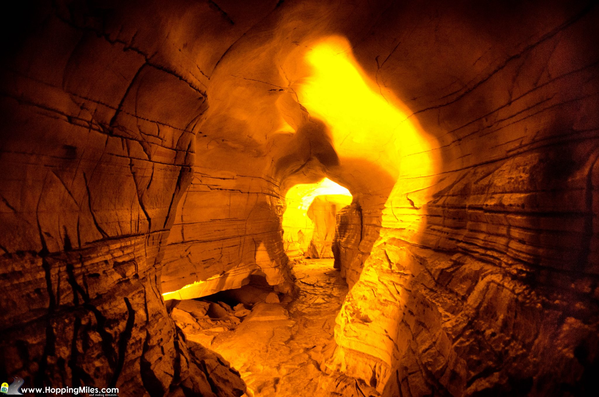

Belum Caves
Belum Caves, the second-largest cave system in India, are located in the Kurnool district. Known for their unique formations and historical significance, the caves attract numerous tourists and researchers. They offer a fascinating underground exploration experience.
Location: Belum Village, Kurnool, Andhra Pradesh, India
Ticket Price: INR 50 for Indian citizens, INR 300 for foreign tourists
Transportation: Accessible by road, with regular bus services from Kurnool. Nearest railway station is in Tadipatri, and the nearest airport is in Bangalore.